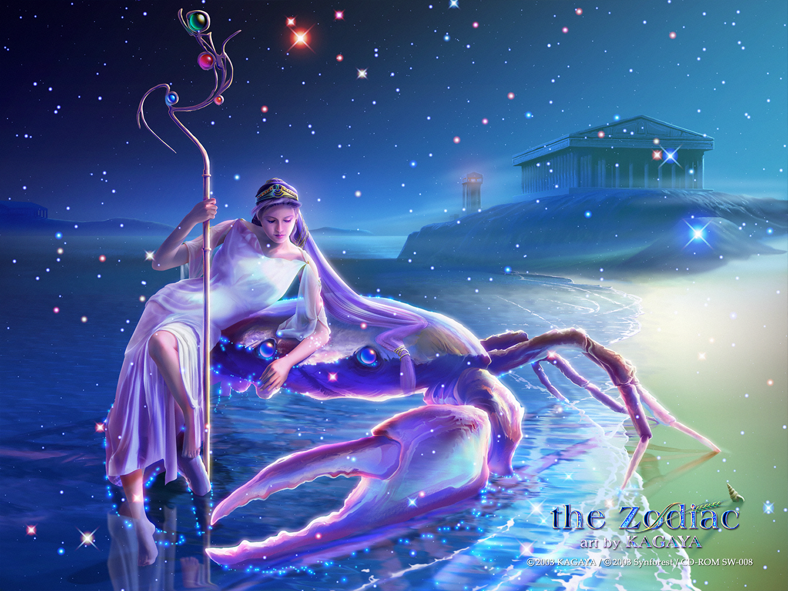
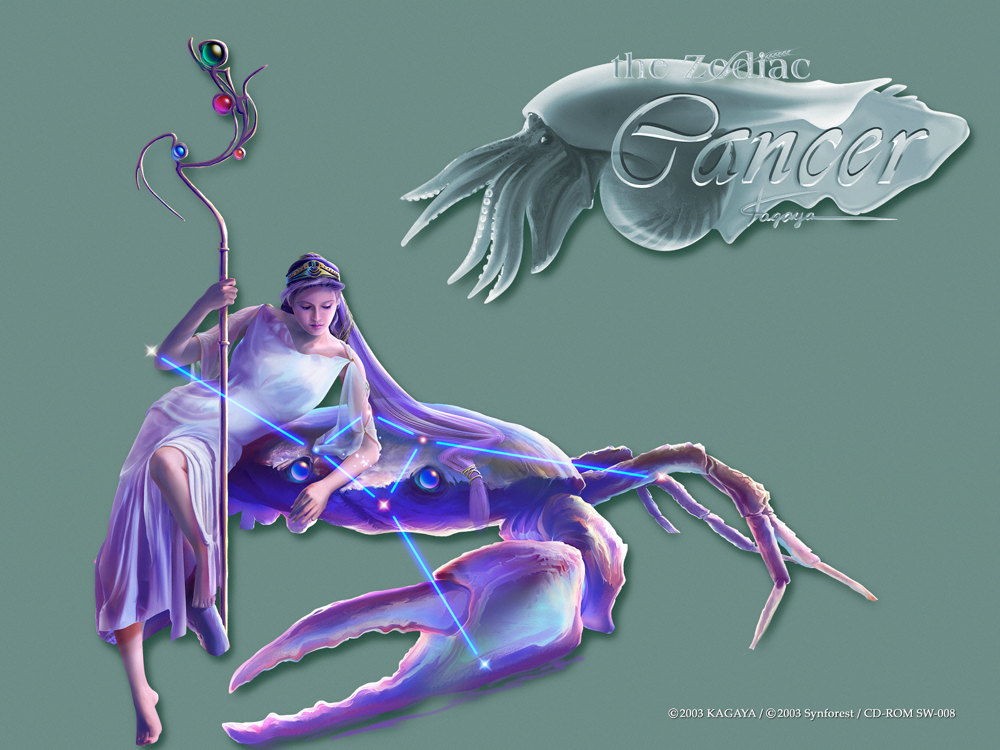
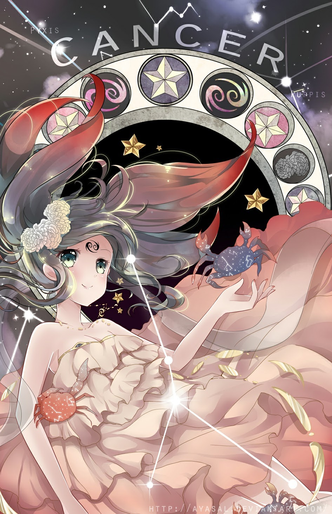

CỰ GIẢI
Là biểu tượng của nước. Sao chiếu mệnh là Mặt Trăng. Người cung Cancer có những hành động hơi quá khích: sự u sầu, phiền muộn xen lẫn với sự vui mừng, hân hoan. Người cung Cancer thì dịu dàng, bảo thủ, thất thường, khó hiểu và kì lạ.
Họ thích sống trong xa xỉ, 1 số lại thích sống miền ngoại ô thôn quê, và chăm sóc ngôi nhà của họ (trang trí căn nhà với những thứ cổ xưa kì lạ) họ thích quá khứ và truyền thống.
Họ sợ những thứ không đáng tin từ những đồ vật mới và những đồ vật trong tương lai, và ghét sự bạo lực. Họ rất nhút nhát, ích kỷ và lãng mạn, và họ cố gắng gắn bó với người mà họ yêu. Những công việc thích hợp nhất cho người cung Cancer: trang trí nội thất, nhà khảo cổ, luật sư, đầu bếp và quản gia.
2, Mô tảNgười Cự Giải rất đáng yêu. Đôi khi họ giả vờ khó tính nhưng đó chỉ là vờ vịt. Họ có trí nhớ tốt và phần lớn những người này giỏi lịch sử. Họ thích những gì xưa cũ như viện bảo tàng, đồ cổ và ông bà. Họ kín đáo và giữ bí mật tốt.
Vật dụng của họ luôn được cất giữ cẩn thận. Họ thường sưu tập đồ vật. Người khác gọi chúng là rác nhưng với họ là vàng. Họ là người của gia đình và đời sống tâm linh. Ngoài ra, họ hài hước và nấu nướng rất tài.

Giống như biểu tượng con cua, họ có vẻ ngoài khó ưa và lãnh đạm. Tuy nhiên với những ai hiểu và yêu “đứa con của Mặt Trăng” này sẽ thấy rằng bên trong lớp vỏ ngụy trang ấy là một tâm hồn mềm yếu và hết sức nhạy cảm… Đời sống tinh thần của họ có thể ví như sóng ngầm nơi biển cả vậy.
Tình yêu và sự lãng mạn là những điều quan trọng nhất đối với Cancer, (đôi khi vị trí này phải nhường cho việc có nhiều tiền trong ngân hàng). Không có nhân nào lãng mạn bằng Cancer, và nói cho công bằng, cũng không có ai (đôi khi) biến sự rồ-man-tic ấy thành ya-ua nhanh như họ.
Cancer cũng phải trải qua bao lần “tròn” và “khuyết” như ngôi sao chiếu mệnh của họ trong suốt cuộc đời. Mối liên hệ với Mặt Trăng khiến họ không thể chèo lái con thuyền của mình một cách bình yên ngày này qua ngày khác.
3, Tính cách cơ bảnCự Giải không ngừng gặp phải những dòng xoáy trong đại dương tình cảm, những đợt sóng tình cảm không ngừng vỗ đập vào họ, đại dương có lúc thuỷ triều lên có lúc thuỷ triều xuống, tình cảm của Cự Giải cũng lúc lên lúc xuống như thuỷ triều vậy.
Đương nhiên những điều này chỉ có những người rất hiểu Cự Giải mới có thể thấy được, nhưng cũng có khi những người này cũng cảm thấy hoài nghi về phán đoán của mình, vì ngoại hình tự tin của Cự Giải khiến cho họ xem ra không dễ bị tổn thương, trong cuộc sống hàng ngày của họ, cho dù phải đối diện với bao nhiêu phong ba sóng gió, bao nhiêu nghịch lí ngang trái, họ xem ra vẫn sống ung dung được.
Nhưng xin nhớ rằng những điều nói ở trên đây chỉ là “xem ra” – bề ngoài tự tin của họ chẳng qua chỉ là một lớp áo giáp được đánh bóng, họ mặc lên để nguỵ trang cho sự yếu đuối của nội tâm. Nhưng với những người có khả năng quan sát sắc sảo, nhạy bén mà nói, họ có thể nhanh nhìn thấu ra nó, và phát hiện ra sau đó là một tâm hồn mềm yếu và đa sầu đa cảm.
Cự Giải từ trước đến nay không bao giờ áp dụng hành động trực tiếp cho mục tiêu của mình. Ngược lại, họ thường dừng lại, đánh giá nhiều lần về khả năng thành công, đồng thời không bao giờ hỏi ý kiến của người khác, cũng không thổ lộ những tâm sự bí mật của mình.
Một khi đã quyết định xong, họ sẽ tập trung toàn bộ sức lực để đạt được mục tiêu của mình, những biện pháp họ sử dụng thường là ngoài sự dự liệu của người khác, luôn là sách lược chạy vòng quanh, nhưng tốc độ lại nhanh đến kinh ngạc. Nếu mục đích của họ chưa được thực hiện, cũng không vì vậy mà giận dữ hoặc từ bỏ, họ chỉ trở lại xuất phát điểm một lần nữa, tiến hành thực hiện từ một góc độ khác.
Cuối cùng họ sẽ giành được thành công, còn cái giá họ phải trả theo họ, cũng là có thể chấp nhận được, từ đó về sau, ngoại trừ cái chết hoặc là những lực lượng siêu nhiên vượt ngoài quy luật ra, cho dù là điều gì đi chăng nữa cũng không thể khiến họ từ bỏ quan niệm đã hình thành trong đầu. Họ rất có nghị lực, luôn kiên trì theo đuổi mục đích của mình, chính nghị lực này đảm bảo cho con đường tiến thân của họ, cho dù phải đối mặt với rất nhiều khó khăn, họ có thể khắc phục từng bước những gian khổ. Một câu nói mà họ thích nhất đó là “nếu khi bắt đầu bạn không thể giành được thắng lợi, vậy thì hãy nỗ lực, nỗ lực, và nỗ lực“.
Sự mẫn cảm khác thường của Cự Giải đối với những người xung quanh và tình cảm nội tâm của họ, khiến cho họ có được khả năng quan sát rất tốt đối với sự thay đổi dù là nhỏ bé của môi trường xung quanh, điều này khiến cho họ thường gây được tình cảm với người xung quanh.
Điều này cũng đảm bảo họ không mạo hiểm tiến vào những khu vực mà họ không nên bước chân vào, cũng khiến cho họ không bỏ qua bất cứ điều nhỏ bé nào, nhưng đối với họ mà nói lại là những tiểu tiết tình cảm vô cùng quan trọng. Trong những giờ phút khó khăn trong cuộc đời mà họ cần phải vô cùng cẩn thận trải qua, cũng là sự mẫn cảm khác thưòng này đã liên tục nhắc nhở họ về những cạm bẫy hoặc hiểm nguy trước mặt.
Trong rất nhiều trường hợp, sự mẫn cảm của Cự Giải cuối cùng đã có được sự báo đáp, đương nhiên không hẳn lúc nào cũng vậy. Loại tính cách này đôi khi khiến cho người khác cảm thấy bực bội, vì có người cho rằng họ quá mẫn cảm, dễ bị rơi vào những hang tối tự ngồi than thở xót thương, và tình cảm bị suy sụp, khiến cho người khác không thể quay người bỏ đi đến tìm nụ cười và niềm vui ở nơi khác.
Chúng ta có thể phát hiện thấy giữa ngôn ngữ thường ngày và những chòm sao cũng có liên hệ. Ví dụ, “ con cua” có ý chỉ “ dễ tức giận, tính khí không tốt, hay oán giận”. Trên thực tế cũng thật sự là vậy, khi tâm trạng của Cự Giải ở vào giới hạn xấu cực độ, thì tất cả những miêu tả này đều có thể dùng cho họ.
Bất cứ nỗ lực nào mong giúp họ trút bỏ gánh nặng, hoăc mong giúp họ vui vẻ trở lạ đều là vô công phí sức. Cách tốt nhất là không làm gì cả, ngồi im bên cạnh họ đợi cho đến khi tâm trạng này qua đi, cũng giống như việc đợi thuỷ triều xuống hàng trăm năm nay. Nhưng, từ một phương diện nào đó, khi người khác gặp khó khăn, Cự Giải thường có thể hiện ra sự đồng cảm chân thành nhất, thiện tính trung thành này trong lúc này luôn được thể hiện chân thành nhất. Họ sẽ hầu như không do dự đứng ra bảo vệ lợi ích của gia đình và bạn bè thân thiết. Cho dù sự đau khổ và khó khăn của người trước mặt họ có nghiêm trọng, phức tạp đến thế nào đi chăng nữa, hoặc là thời gian có dài đến thế nào, nhưng Cự Giải không chỉ ngồi lắng nghe, điều quan trọng hơn là họ sẽ áp dụng những hành động thực tế, giúp đỡ họ, cổ vũ họ trong phạm vi khả năng có thể.
Cần phải thừa nhận rằng, thế giới mà chúng ta đang sống hiện nay đầy những khó khăn chồng chất vây quanh khiến chúng ta trở tay không kịp, người khác lại thường không có đủ kiên nhẫn nghe chúng ta nói. Do đó, phẩm chất tốt đẹp này của Cự Giải trở nên đặc biệt quý trọng trong những lúc như vậy.
4, Phương thức tư duy, kĩ xảo giao lưu và khả năng thích ứng với công việcĐặc trưng lớn nhất của Cự Giải chính là tính cẩn thận, lúc nào cũng ở trong trạng thái cánh giác đề phòng. Họ tuyệt đối không vội vàng đưa ra quyết đinh, trong khi xử lý vấn đề, nếu đối phưong vạch ra các kế hoạch hoặc phưong án, những ý kiến sơ sài, chưa được suy nghĩ thấu đáo rất ít khi được chấp nhận. Kiến nghị họ đưa ra, chính là suy nghĩ một cách vô vùng thấu đáo đối với từng bước đi của mình. Phương án mà họ đề ra, luôn có thể thể hiện sự lý giải vô cùng rõ ràng đối với những nhân tố liên quan, phản ánh một cách đầy đủ khả năng quan sát cực kì nhạy bén của họ về con người và những vấn đề liên quan đến con người.
Nhưng, những ý kiến của họ luôn có sắc thái tình cảm cá nhân mà thiếu đi tính logic. Vì thế khi có người khác đưa ra những ý kiến trái ngược, họ không thể lập tức đưa ra những câu trả lời lạnh lùng lí trí và không có chút thiên kiến. Điều này sẽ ảnh hưởng đến những phán đoán chính xác của họ đối với tình thế.
Đương nhiên, đối với nhân tố tình cảm được cất sâu nơi nội tâm, và thường dẫn đến sự rối loạn trong phương hướng tư duy của Cự Giải, người không để ý sẽ không phát hiện ra, vì họ giỏi nguỵ trang, họ luôn tìm cách để giấu giếm sự yếu đuối này dưới cái vỏ tự tin, một hiệu quả khác của sự nguỵ trang này mang lại vô hình chung lại gia tăng thêm tính quyền uy và lòng trách nhiện đối với những lời mà họ nói, những việc mà họ làm.
Trong lời nói cử chỉ của họ, trong đường lối tư duy suy nghĩ của họ, người khác đều khó phát hiện thấy sự mẫn cảm và mềm yếu này đã được nguỵ trang. Nhưng trong sâu thẳm nội tâm của họ, luôn có khuynh hướng miệt thị nào đó, cho dù là thật hay là tưởng tượng, cũng chính là loại phương hướng này khiến cho họ dễ dàng bị những lời nói và hành động nào đó làm tổn thương, còn những hành vi hoặc lời nói này đối với những người thuộc chòm sao khác mà nói, thì căn bản không đáng để nghĩ ngợi.
Tâm lý nông nổi dễ oán giận này cũng dễ dàng trở thành một trở ngại lớn trong việc xây dựng mối quan hệ tốt đẹp với người khác, cho dù là chủ hay là nhân viên. Vì đối với họ mà nói, họ chưa từng trải qua sự nhạy cảm cực đoan như thế, họ cũng không quen với việc chịu đựng trạng thái lúc tốt lúc xấu của người khác.
Tuyệt đại đa số Cự Giải có trí nhớ rất tốt, họ luôn có thể nhớ một cách rất rõ ràng về những sự việc xảy ra trong nhiều năm về trước, cho dù là tốt hay xấu. Nhận thức của họ với người khác, trên một mức độ rất lớn cũng dựa vào phản ứng bản năng của họ, họ không bao giờ bị mê hoặc bởi sự nhiệt tình bề ngoài, những nụ cười giả tạo, hoặc là những lời hứa sáo rỗng; ngược lại, họ có thể nhìn thấy ý đồ thực sự ẩn trong đó. Họ có lẽ không bao giờ có thể dùng từ ngữ để giải thích tại sao họ thích hoặc là không thích hoặc là không tín nhiệm một ai đó, nhưng những người nghe theo lời cảnh báo của họ luôn có thể phát hiện thấy họ cuối cùng thường là đúng.
Họ thích cuộc sống yên tĩnh, hoà bình, họ ra sức tạo cho mình một khoảng trời nhỏ riêng tư, và lặng lẽ quan sát người khác. Cự Giải luôn hi vọng tha thiết những thành quả của mình có thể sẽ được người khác công nhận. Nhưng họ cũng không muốn thể hiện sự khác biệt với mọi người trong công việc và trong cuộc sống, họ muốn lưu lại cho người khác một ấn tượng bảo thủ và thân thiện với mọi người, điều này khiến cho họ không dễ dàng bị người khác trách cứ.
Cự Giải thích nhất là kết bạn hoặc hợp tác làm ăn với những người nhạy bén và giàu sự đồng cảm, họ thích kết giao với những người nghiêng về lý giải bản năng đối với người khác hoặc các vấn đề, những người trung thành chờ đợi, coi trọng ân nghĩa báo đáp, và những người giữ được lòng tin đối với những điều mà tin tưởng. Còn đối với những hoạt động luôn chân luôn tay, giao tiếp xã giao liên tục hoặc là quá trình phân tích đòi hỏi cao, họ không có biểu hiện gì kiệt xuất cho lắm.